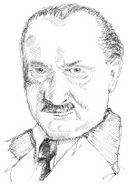

Almanya, Messkirch’te doğan Martin Heidegger (1889-1976), ilk başta Katolik bir rahip olmayı planlamıştı. Bunun yerine, sonunda kiliseyi tümüyle bırakarak bir filozof oldu. Freiburg Üniversitesi’nde bir öğrenciyken, fenomeno- lojinin kurucusu Edmund Husserl’i (1859-1938) takip etmeye başladı.

1933’ten 1934’e kadar Heidegger, Freiburg Üniversitesi’nin rektörüğüne seçildi ve Nazi Partisi’ne katıldı. Husserl ve Heidegger’in diğer meslektaşlarının çoğu Yahudi olmasına rağmen, Heidegger asla Nazizm ile olan irtibatından dolayı özür dilemedi. Felsefesi ile Nazizm arasındaki ilişki, o zamandan bu yana tartışma konusudur.
Heidegger’in düşüncesi, hayatı boyunca evrildi, ama merkezî odak noktası her zaman “varlık sorunsalı” –Varlık nedir? Var olmak ne demektir?– olarak kaldı. Heidegger’e göre bu, unutulmuş olan metafiziğin temel bir sorusuydu. Heidegger, filozofların insanlar ve hatta Tanrı gibi “varlıklar” ile kafalarının karıştığını savundu. Buna karşın Heidegger, varlık (olmak demek olan) ile var olanlar (var olan belli şeyler) arasındaki farkı vurguladı.
Heidegger, ilk önce Varlık ve Zaman (1927) adlı en ünlü eserinde bu görüşünü tartıştı. Burada Heidegger, varlığı anlayan bir varlığı (insanı) sorgulayarak varlık sorunsalını ele aldı. Sonraki eserlerinde Heidegger, insan varoluşunun analizinin önemini azaltmaya ve varlığı doğrudan göz önünde bulundurmaya eğilim gösterdi. “Teknoloji” dediği şeyle artan bir biçimde ilgilenmeye başladı. Onunla, bilgisayarları ve makineleri kastetmedi ama daha ziyade kendi tasarrufumuza verilmiş bir kaynak olarak düşündüğümüz dünyayı anlamanın bir yolu olarak gördü. Heidegger, bu tutumunda oldukça eleştireldi.
EK BİLGİLER:
1. Sonraki yazılarında Heidegger, yaptığı şeyi felsefeden çok “düşünme” olarak tarif etti. Düşünmeyi, şiirle çok daha yakından ilgili bir şey olarak tarif etti.
2. Heidegger’in “teknoloji” üzerine yazıları, çevre hareketi üstündeki ilk etkiydi.
3. Evli olmasına rağmen Heidegger’in, o zamanlar kendisinin bir öğrencisi olan ama sonunda kendi kendine önemli bir filozof hâline gelen genç Hanah Arendt (1906-1975) ile de bir aşk ilişkisi vardı. Arendt, Yahudiydi ve 1930’larda Heidegger’in Nazizm ile olan ilgisinden özellikle hayal kırıklığına uğramıştı.